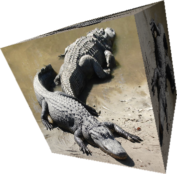
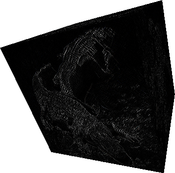
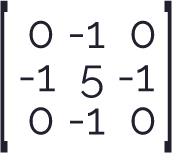
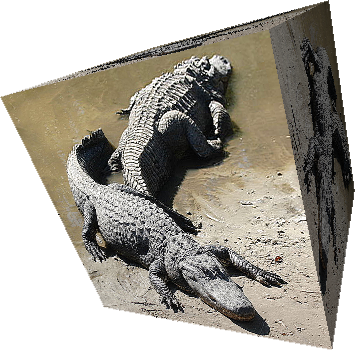
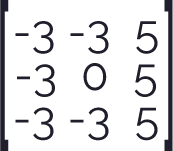

Convolution Matrix
Shaders and WEBGL
En la siguiente publicación se pondrá en practica lo aprendido durante el estudio de procesamiento de imágenes en los ejemplos expuestos y desarrollados en PIXELS AND IMAGES, donde se observó cómo funciona una matriz de pixeles y cómo modificar los pixeles de una imagen accediendo a los valores de este arreglo.
A continuación, se observará cómo se puede obtener una imagen a escala de grises a partir del Promedio de los componentes RGB de una imagen y el caculo del coeficiente Luma. Para ello este estudio esta basado en la documentación HSL and HSV y en gran medida estará basado en el ejemplo BLACK AND WHITE anteriormente trabajado, por lo tanto, no se profundizará en los cálculos de las expresiones, sino en la manera de aplicar estas expresiones a nuestro programa en p5.js para modificar la luminancia de la imagen y obtener los resultados esperados.
Para obtener una imagen a escala de grises por medio del siguiente programa, bastará con acceder al componente RGB de cada pixel de la imagen, hacer el cálculo del Promedio RGB o el coeficiente Luma utilizando las expresiones descritas en la tabla de Comandos por Teclado y por último se reemplazará el valor obtenido en cada uno de los componentes de color RGB del pixel. Adicionalmente también se observarán otras posibilidades para modificar la luminancia de la imagen y obtener la imagen a escala de grises a partir del calculo del Componente mas grande, el Rango medio y el Valor de Munsell visto en la documentación Lightness.
Comandos por teclado
| Tecla | Operación | Kernel (Núcleo) | Imagen resultante |
|---|---|---|---|
 |
Identidad |  |
 |
 |
Acentuar los bordes |  |
 |
 |
Repujado |  |
|
 |
Detección de bordes |  |
 |
 |
Detección de bordes |  |
 |
 |
Detección de bordes |  |
 |
 |
Enfocar |  |  |
 |
Desenfoque de cuadro(normalizado) |
 |
 |
 |
Operador de Robinson |  |
 |
 |
Operador de Kirsch |  |  |
Image of Alligator a crocodilian in the genus Alligator of the family Alligatoridae. Source: Wikipedia, the free encyclopedia.Two American Alligators (Alligator mississippiensis), Florida, USA
Video Clip of a live Alligator's eye. Source: RawShorts.Close-up of a live alligator's eye. Crocodile, caiman. Dinosaur monster stock video
p5*js Code
let theShader;
let shaderTexture;
let img;
let theShaderVideo;
let shaderVideo;
let video;
let angle=0;
let mask = 0;
function preload(){
img = loadImage('https://upload.wikimedia.org/wikipedia/commons/thumb/c/cd/Two_american_alligators.jpg/640px-Two_american_alligators.jpg');
video = createVideo('https://dm0qx8t0i9gc9.cloudfront.net/previews/video/YSvEcxy/videoblocks-alligators-eye-close-up-of-a-live-alligators-eye-crocodile-caiman-dinosaur-monster_rmlq8ertq__cb8b5c0c7799d4c97439ed0d1d639f09__P360.mp4');
video.hide();
// Cargar los shaders
theShader = loadShader('texture.vert','texture.frag');
theShaderVideo = loadShader('texture.vert','texture.frag');
}
function setup() {
pixelDensity(1);
// Se requiere trabajar con WEBGL
createCanvas(windowWidth, 400, WEBGL);
noStroke();
// Inicializar la capa del createGraphics
shaderTexture = createGraphics(512, 512, WEBGL);
shaderVideo = createGraphics(windowWidth, windowHeight, WEBGL);
// Quitar bordes en el createGraphics
shaderTexture.noStroke();
shaderVideo.noStroke();
video.loop();
}
function draw() {
// Se pasa el shader a la capa del createGraphics
shaderTexture.shader(theShader);
shaderVideo.shader(theShaderVideo);
// Valores uniform para el fragment shader
theShader.setUniform("u_img", img);
theShader.setUniform("u_key", mask);
theShader.setUniform("u_stepSize", [1.0/width,1.0/height]);
theShaderVideo.setUniform('u_img', video);
theShaderVideo.setUniform('u_key', mask);
theShaderVideo.setUniform("u_stepSize", [1.0/width,1.0/height]);
// Renderizar el shader
shaderTexture.rect(0,0,width,height);
shaderVideo.rect(0,0,width,height);
background(255);
// Puntos de luz
pointLight(255, 255, 255, 0, 0, 500);
// Efecto linterna
let dx= mouseX-width/2;
let dy= mouseY-height/2;
pointLight(100,255,100,dx,dy,100);
translate(0, 0, 0);
push();
// Se pasa el shader como textura
texture(shaderTexture);
translate(200, 0, 0);
rotateZ(angle);
rotateX(angle);
rotateY(angle*2);
box(200);
pop();
// Rotacion de la caja
angle += 0.002;
push();
// Se pasa la imagen original como textura
texture(img);
// Numero de puntas de la figura
let ellipseFidelity = int(map(mouseX, 25, width, 8, 100));
ellipse(-250, 0, 350, 350, ellipseFidelity);
//plane(500,500);
pop();
push();
//Se pasa el shader del video como textura
texture(shaderVideo);
translate(0, 0, -100);
plane(900,500);
pop();
}
// Se ejecuta cuando se presiona cualquier tecla
function keyPressed() {
if (key === '0') {
mask = 0;
} else if (key === '1') {
mask = 1;
} else if (key === '2') {
mask = 2;
} else if (key === '3') {
mask = 3;
} else if (key === '4') {
mask = 4;
} else if (key === '5') {
mask = 5;
} else if (key === '6') {
mask = 6;
} else if (key === '7') {
mask = 7;
} else if (key === '8') {
mask = 8;
} else if (key === '9') {
mask = 9;
}
}Vertex Code
attribute vec3 aPosition;
attribute vec2 aTexCoord;
// Obtener texcoords
varying vec2 vTexCoord;
void main() {
// Copia los texcoords
vTexCoord = aTexCoord;
// Copia la poscicion de los datos en vec4, usando 1.0 como el componente w
vec4 positionVec4 = vec4(aPosition, 1.0);
// Escala la posicion por dos y la mueve al centro de la pantalla
positionVec4.xy = positionVec4.xy * 2.0 - 1.0;
// Envia la informacion del vertex al fragment shader
gl_Position = positionVec4;
}Fragment Code
attribute vec3 aPosition;
attribute vec2 aTexCoord;
// Obtener texcoords
varying vec2 vTexCoord;
void main() {
// Copia los texcoords
vTexCoord = aTexCoord;
// Copia la poscicion de los datos en vec4, usando 1.0 como el componente w
vec4 positionVec4 = vec4(aPosition, 1.0);
// Escala la posicion por dos y la mueve al centro de la pantalla
positionVec4.xy = positionVec4.xy * 2.0 - 1.0;
// Envia la informacion del vertex al fragment shader
gl_Position = positionVec4;
}